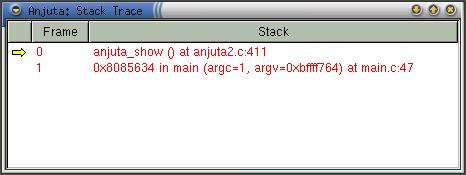
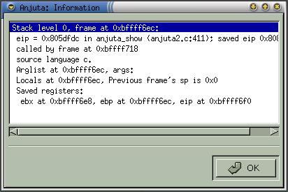

|
|
Anjuta Manual version 0.1Copyright (c) Kh. Naba Kumar Singh |
| Contents | Index | Shortcuts |
| PREV:Expression Watch | UP:Contents(Debugging) | NEXT:Kernel Signals |
Stack trace window shows the contents of the program stack. It will list all the functions and their arguments in the sequence they were called. You will also find a number representing each call. This number is called Frame. Each call in the trace exists in different frames. It starts from frame 0 (Last function being called) and grows higher as the function nesting become deeper and deeper.
Activate View->Program Stack, to bring up the stack trace of the program being debugged.

You will find a small arrow pointing to a frame in the stack trace. This arrow shows the currently selected frame. Default is frame 0, the last function being called. All the evaluation and inspection of expressions or variables will be with reference to this selected frame. Naturally, the scope of the variables or expressions being evaluated will be limited to the selected frame only. The same applies for the expressions in the watch.
Double clicking on any frame in the stack trace will set the frame as currently selected frame (the arrow will now point to this frame, indicating that it has been selected as the current frame). Alternatively, you can pop-up the operation menu by right clicking on the stack trace window and activate the menu item Set frame to set the frame.
Information about the current frame:
You can also get the information about the currently selected frame by activating Debug->Information->Info Current frame. A window will appear describing the current frame.

Activating the menu item Update from the operation menu (right click to pop it up) will refresh the stack trace window.